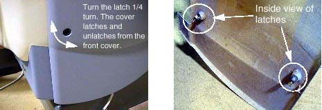
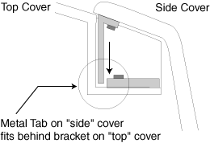

Operating Documentation
Direction 5224328-800, Rev# 5
Dir 5224328-800 LightSpeed 5.X HP60 Limited Access Service
Methods - Adv.
Operating Documentation |
| Required Persons | Preliminary Reqs | Procedure | Finalization |
|---|---|---|---|
| 1 |
This procedure explains how to remove and re-install the CT Gantry side covers.
| Last Revised: | 22 April, 2004 |
| Item | Qty | Effectivity | Part# | Manufacturer | |
|---|---|---|---|---|---|
| 8mm Hex wrench | 1 | - | - | - | |
| NOTE: | Before beginning this procedure, please read the safety information in Equipment Service - Gantry. |
Lower table to home (lowest) position.
| Potential for Shock. | |
| Voltage may be present. Potential for injury if covers removed and power is left ON. | |
| Always remove the right side cover first, and turn OFF power at the service switches. |
| Always turn OFF the HVDC before the 120 VAC. Turning OFF 120 VAC power before HVDC power can result in equipment damage. | |
Use an 8mm Hex wrench to unlatch the side cover from the front cover. See Illustration 1.
Illustration 1: Side Cover Latches

Remove the right side cover by lifting it upward to release the two (2) latches, located on the top edge of the cover. See Illustration 2. Once removed, the service switches should be exposed.
Illustration 2: Side and Top Cover Clasp

Turn OFF the three (3) main power switches (HVDC, 120VAC, and Axial Drive) on the Service Switch Panel (SSP). See Illustration 3.
Illustration 3: Service Switch Panel

To install a side cover, place it over the top cover and let the two (2) side cover latches slide behind the metal tabs, located on the top cover. See Illustration 2.
Use Hex wrench to secure the side cover to front cover by turning the bolts a quarter turn. See Illustration 1.
No finalization required.